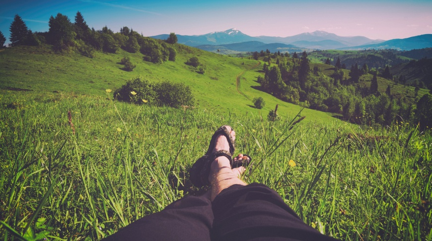
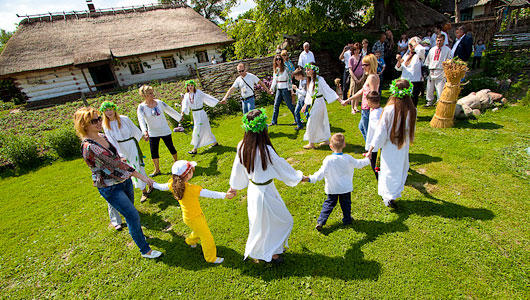
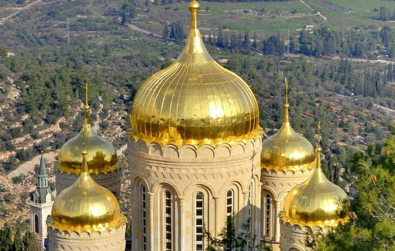

Зелений туризм

Екотуризм або екологічний туризм — тип туризму, що полягає у подорожах до природних недоторканих людиною та, часто, природоохоронних територій. Екотуристи намагаються не здійснювати значного впливу на територію. Екотуризм сприяє освіті туристів та дозволяє збирати гроші на заходи зі збереження території, допомагає розвитку ізольованих поселень. Розвиток екотуризму часто розглядається як важливий засіб збереження довкілля для майбутніх поколінь
Подієвий туризм - напрям порівняно молода і надзвичайно цікаве. Основна мета поїздки приурочена до якогось події. Унікальні тури, поєднують в собі традиційний відпочинок та участь в самих видовищних заходах планети, поступово завойовують все більшу популярність. Подієвий туризм - це неперевершена атмосфера свята, індивідуальні умови відпочинку і незабутні враження. Головна особливість подієвого туризму - безліч яскравих неповторних моментів. Це перспективний і динамічно розвивається вид туризму.
Релігійний туризм - це самостійний вид туризму, то в нього, як і в інших його видів, є свої різновиди: паломницький туризм та релігійний туризм екскурсійної спрямованості. Паломницький туризм, як особливий вид, існує та розвивається в наш час інтенсивно та з великим успіхом.Ющенко Олександра
Чернігів 2019